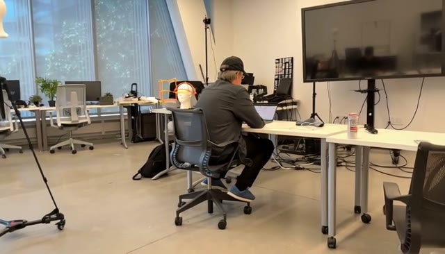
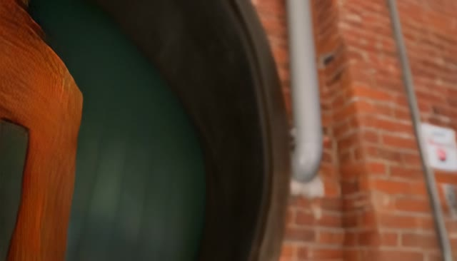
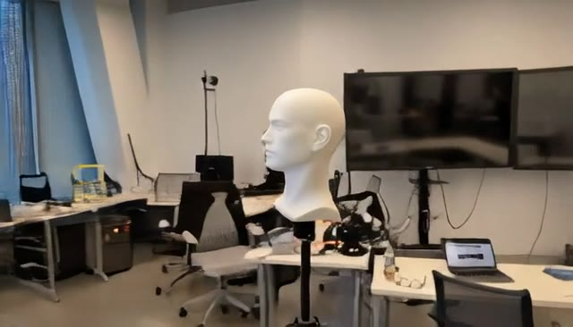
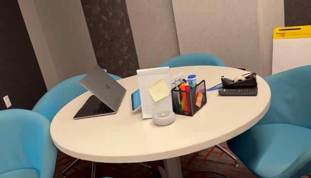
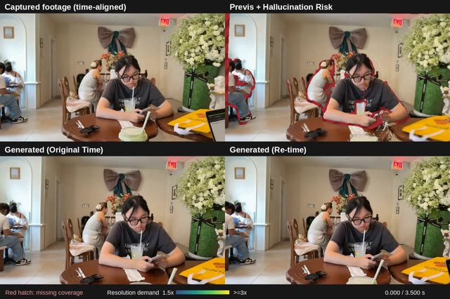
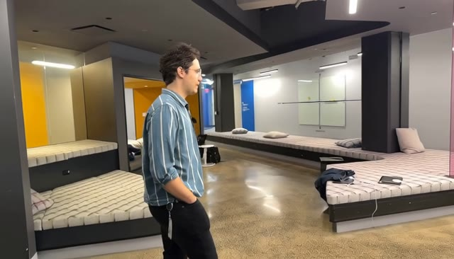
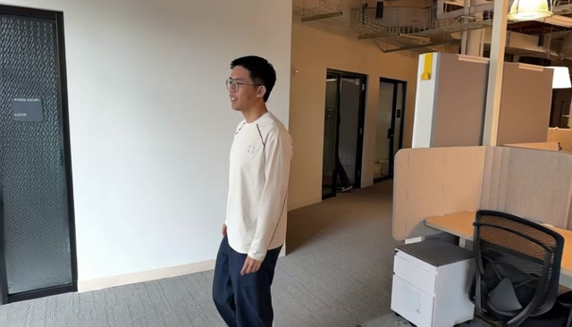

Hybrid Cinematography: Previsualizing and Managing Hallucination Risk in Generative Video Reshooting
1 Cornell University2 Google Research
Project video
Watch on YouTube
Abstract
On a film set, the camera move is committed during a take. Generative video reshooting lets filmmakers change it afterward, but may require hallucinating unrecorded content, a gap sometimes discovered only after leaving the set. We present Hybrid Cinematography, a workflow that bridges physical capture and generative reshooting to manage hallucination risk while filmmakers can still act on it. Using an editable 3D shot plan and a proxy of the take, our previsualization evaluates hallucination risk in real time. Seeing where the take lacks support, filmmakers can iteratively adjust the plan, explore moves that balance capture and generation, shoot guided pickups, or knowingly accept hallucination. We demonstrate the workflow through a mobile augmented reality application for on-set planning, capture, and review, and an offline pipeline for existing video. A study with experienced filmmakers reveals how previsualizing risk informs camera decisions and exposes tensions between creative intent and generative hallucination.
Explore the previsualization
Interactive scenes
A quick way to explore
Open a scene to explore its camera moves and diagnostic overlays. Each begins with the same edited target move and slider setting, λ = 0.8.
- Play or scrubInspect the take at different moments.
- Move the sliderCompare the captured and target moves.
- Inspect the warningsClick the preview to explain a region, or toggle overlays.
Use Reset to paper view to start over. Additional timing and display options are under More controls.

Studio performer
192 frames · 6.37 s · 35.0 MB

Office performer
116 frames · 3.83 s · 19.4 MB

Hall cartwheel
49 frames · 2 s · 10.2 MB

Lounge drink
49 frames · 2 s · 7.8 MB

Couple with newspaper
49 frames · 1.6 s · 12.4 MB

Conference punch
49 frames · 2 s · 7.5 MB

Couple walking
49 frames · 2 s · 12.2 MB
Reading the overlays
Red hatching marks unsupported regions in the reconstructed proxy.
Blue-green → yellow indicates increasing resolution or performance warnings. Toggle the overlays to inspect each contribution.
What these scenes show
These are interactive renders of a 3D proxy of ordinary RGB video. Camera poses and depth are inferred with Pi3X; performer masks are inferred with SAM3. The warnings describe support relative to that estimated proxy, rather than predict a generative model’s final output.
Video examples
Compare the original captures and reshoots, including revisions to camera motion and timing.

Dolly zoom
Planned reshoot · 3 videos

Drone shot 1
Retimed reshoot · 2 videos

Mannequin
Planned reshoot · 3 videos

Resolution deficit example
Reshoot with pickup · 3 videos

Retime example
Timing comparison · 1 video

Revise the move
Balanced reshoot · 3 videos

Walking
Revised reshoot · 3 videos